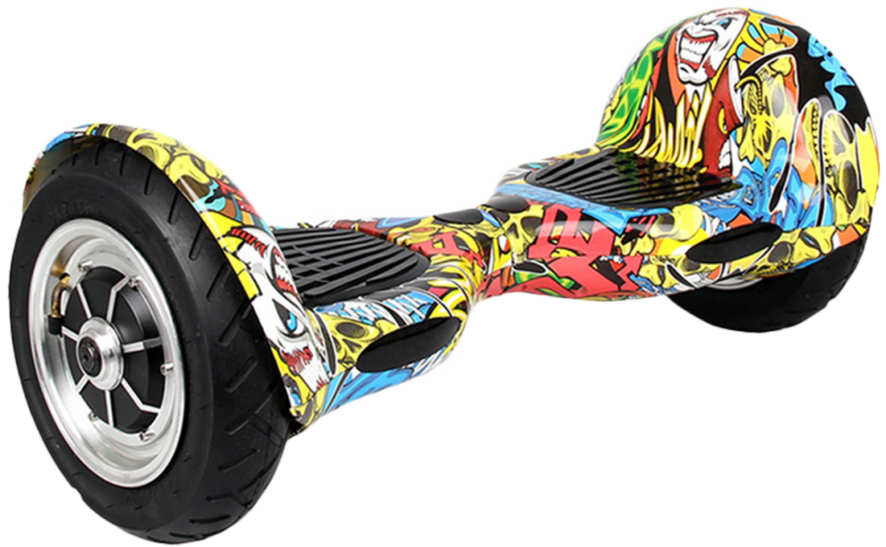
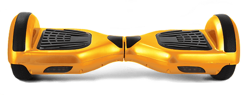
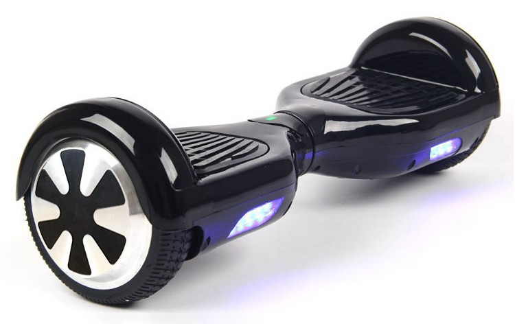

gyroscope10
54900 тг.
Основные характеристики Гарантия 6 месяцев Страна - КНР Электропитание Время зарядки аккумулятора - до 2 часов Работа от аккумулятора - до 22 км Тип аккумулятора - Samsung Емкость аккумулятора - 4400 мАч Нагрузка Минимальная нагрузка - 20 кг Максимальная нагрузка - 120 кг Комплектация Зарядное устройство в комплекте Индикация Индикация зарядки аккумулятора - Да Корпус Встроенные гироскопические датчики - Да Диаметр колеса - 25 см Скорость Макс. скорость движения - 16 км/ч Угол наклона Угол подъема по поверхности - до 15 градусов Цвет и вес Вес - 12 кг Цвет - черный Система безопасности Звуковой сигнал - Да
43900 тг.
Основные характеристики Гарантия 6 месяцев Страна - КНР Электропитание Время зарядки аккумулятора - до 2 часов Работа от аккумулятора - до 20 км Тип аккумулятора - Samsung Емкость аккумулятора - 4400 мАч Нагрузка Минимальная нагрузка - 20 кг Максимальная нагрузка - 120 кг Комплектация Зарядное устройство в комплекте Индикация Индикация зарядки аккумулятора - Да Корпус Встроенные гироскопические датчики -Да Диаметр колеса - 20.32 см Скорость Макс. скорость движения - 18 км/ч Угол наклона Угол подъема по поверхности - до 15 градусов Цвет и вес Вес - 11 кг Цвет - красный Система безопасности Звуковой сигнал - Да
39900 тг.
Основные характеристики Гарантия 6 месяцев Страна - КНР Электропитание Время зарядки аккумулятора - до 2 часов Работа от аккумулятора - до 15 км Тип аккумулятора - Samsung Емкость аккумулятора - 4400 мАч Нагрузка Минимальная нагрузка - 20 кг Максимальная нагрузка - 120 кг Комплектация Зарядное устройство в комплекте Индикация Индикация зарядки аккумулятора - Да Корпус Встроенные гироскопические датчики -Да Диаметр колеса -15.24 см Скорость Макс. скорость движения - 10 км/ч Угол наклона Угол подъема по поверхности - до 15 градусов Цвет и вес Вес - 9.5 кг Цвет - красный Система безопасности Звуковой сигнал - Да
Чтобы приобрести наш товар напишите или позвоните по указанному номеру.
![ 54900 тг. Гироскутер 10 дюймов Основные характеристики Гарантия 6 месяцев Страна - КНР Электропитание Время зарядки аккумулятора - до 2 часов Работа от аккумулятора - до 22 км Тип аккумулятора - Samsung Емкость аккумулятора - 4400 мАч Нагрузка Минимальная нагрузка - 20 кг Максимальная нагрузка - 120 кг Комплектация Зарядное устройство в комплекте Индикация Индикация зарядки аккумулятора - Да Корпус Встроенные гироскопические датчики - Да Диаметр колеса - 25 см Скорость Макс. скорость движения - 16 км/ч Угол наклона Угол подъема по поверхности - до 15 градусов Цвет и вес Вес - 12 кг Цвет - черный Система безопасности Звуковой сигнал - Да](images/2.png){kind=link}
![ 43900 тг. Гироскутер 8 дюймов Основные характеристики Гарантия 6 месяцев Страна - КНР Электропитание Время зарядки аккумулятора - до 2 часов Работа от аккумулятора - до 20 км Тип аккумулятора - Samsung Емкость аккумулятора - 4400 мАч Нагрузка Минимальная нагрузка - 20 кг Максимальная нагрузка - 120 кг Комплектация Зарядное устройство в комплекте Индикация Индикация зарядки аккумулятора - Да Корпус Встроенные гироскопические датчики -Да Диаметр колеса - 20.32 см Скорость Макс. скорость движения - 18 км/ч Угол наклона Угол подъема по поверхности - до 15 градусов Цвет и вес Вес - 11 кг Цвет - красный Система безопасности Звуковой сигнал - Да](images/3.png){kind=link}
![ 39900 тг. Гироскутер 6.5 дюймов Основные характеристики Гарантия 6 месяцев Страна - КНР Электропитание Время зарядки аккумулятора - до 2 часов Работа от аккумулятора - до 15 км Тип аккумулятора - Samsung Емкость аккумулятора - 4400 мАч Нагрузка Минимальная нагрузка - 20 кг Максимальная нагрузка - 120 кг Комплектация Зарядное устройство в комплекте Индикация Индикация зарядки аккумулятора - Да Корпус Встроенные гироскопические датчики -Да Диаметр колеса -15.24 см Скорость Макс. скорость движения - 10 км/ч Угол наклона Угол подъема по поверхности - до 15 градусов Цвет и вес Вес - 9.5 кг Цвет - красный Система безопасности Звуковой сигнал - Да](images/4.JPG){kind=link}